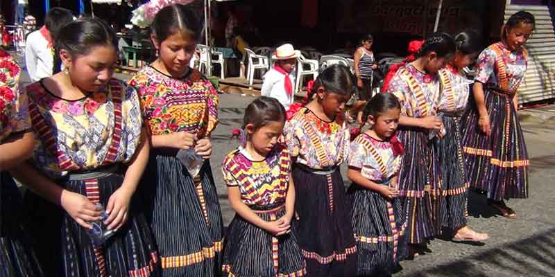
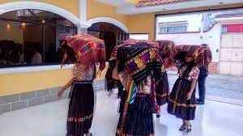
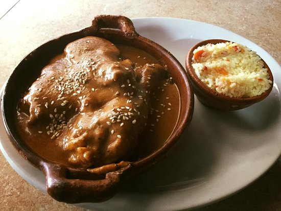
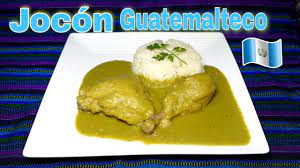
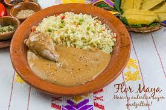

Baile del son
pedimientos
Casamientos
Procesión del Niño del Santisimo 1 de octubre

Feria Patronal 7 de octubre día de la Virgen del Rosario

15 de septiembre día de la independencia

Ferias de Barrio

Desfile Navideño

Pepian
kicho'om

Jocom
Paches de Papa y Arroz


Estofado
Luna de Xelaju

Niño del Santisimo
Himno a Tecun Uman
Volcan Santa Maria
Vanushca